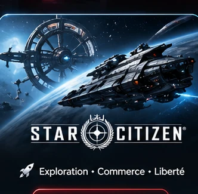

Univers gaming · Real Just Jack
Star Citizen
Exploration et vie spatiale
Star Citizen est un univers spatial en développement où les joueurs peuvent explorer, piloter des vaisseaux et découvrir différentes activités.
Retrouver Jack sur Twitch ↗
Découvrir cet univers en live
J’apprécie particulièrement l’exploration, les trajets et les activités de transport dans cet univers.
Conseil pour commencer
Avant un trajet, prépare ton itinéraire et vérifie ton équipement : l’exploration demande de l’anticipation.
À toi de jouer !
Tu connais cet univers ? Teste tes connaissances avec le quiz interactif du quartier général et tente de débloquer un succès.
Lancer les défis du QG →Explorer les autres univers
MINI-EXPÉRIENCE JOUABLE
Mission de fret
Prépare ton vaisseau, choisis ta route et livre ta cargaison.
Niveau 10 XP0 / 4 univers terminés